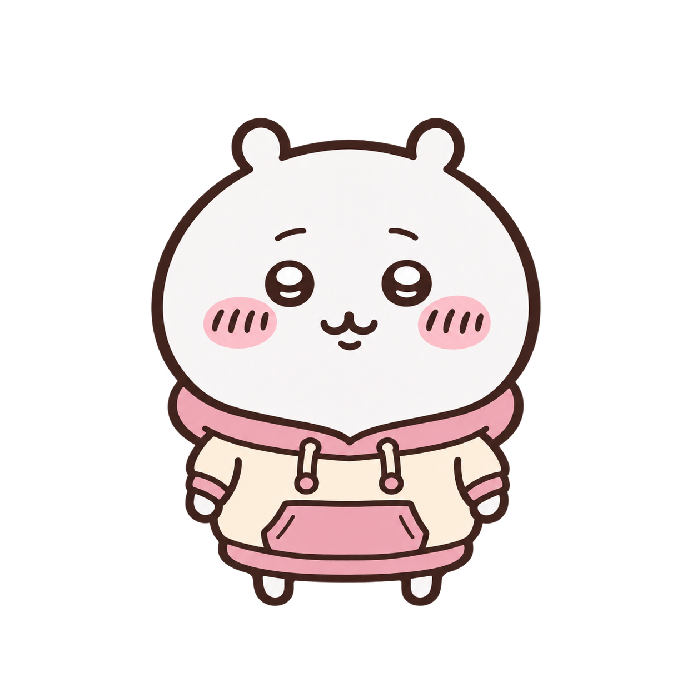
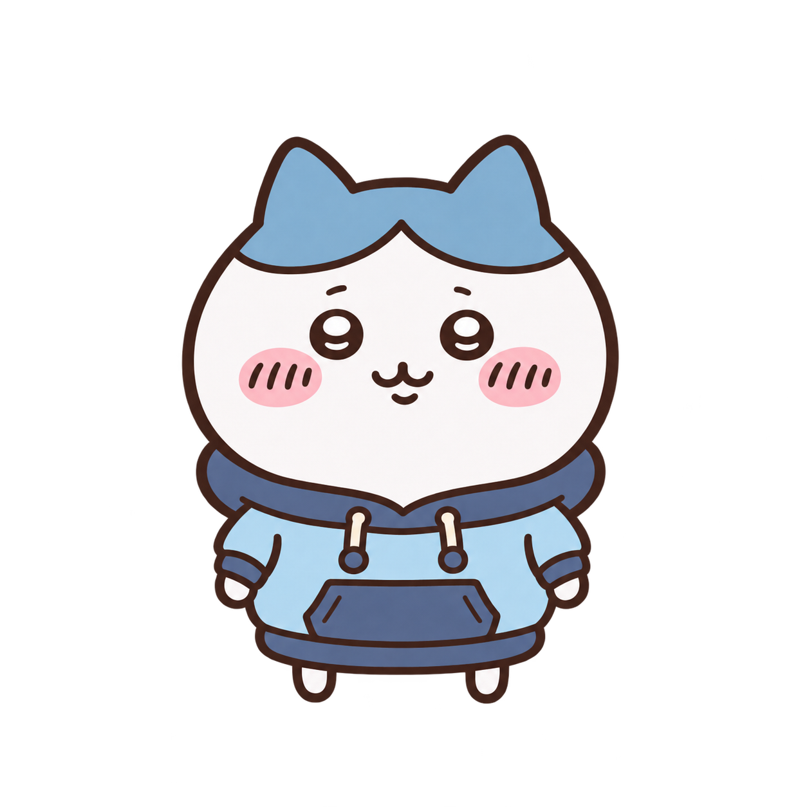
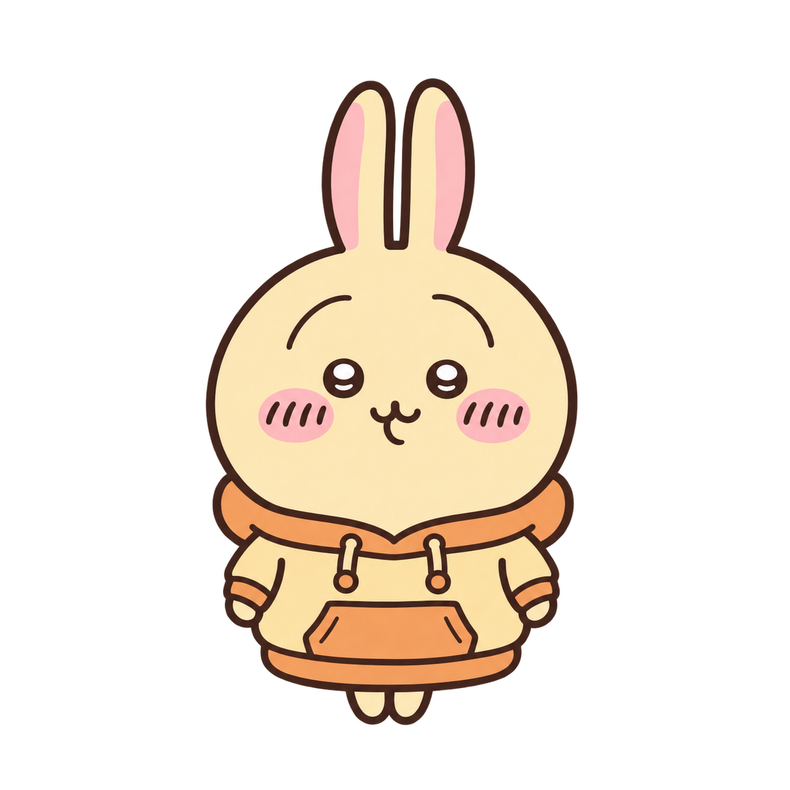
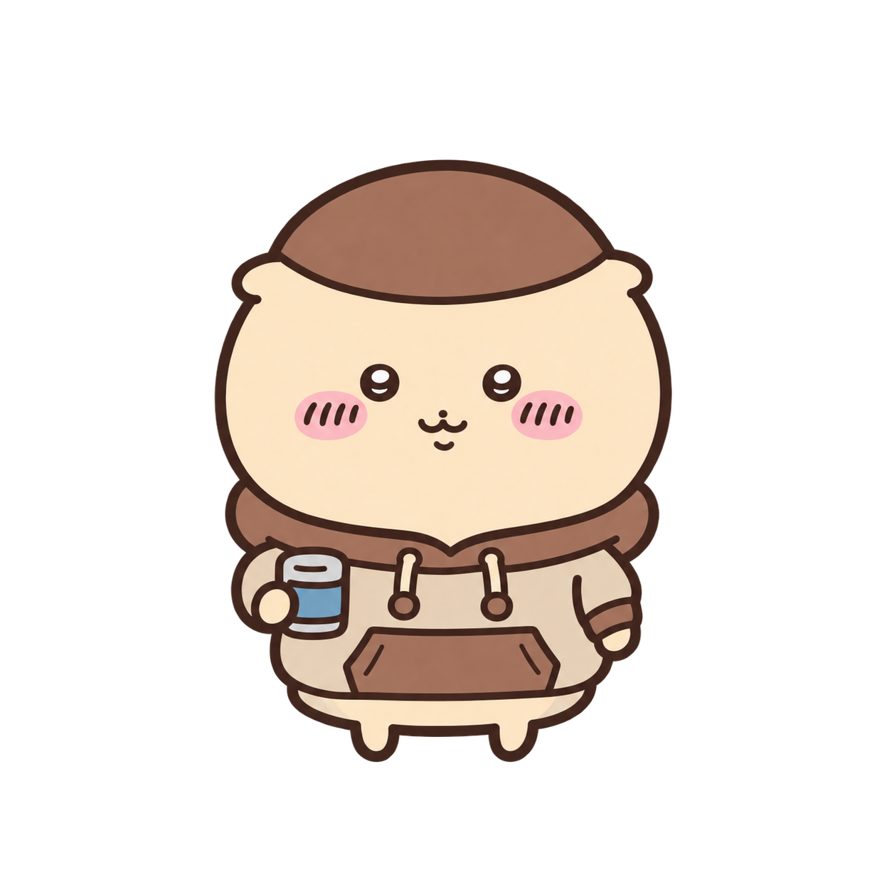
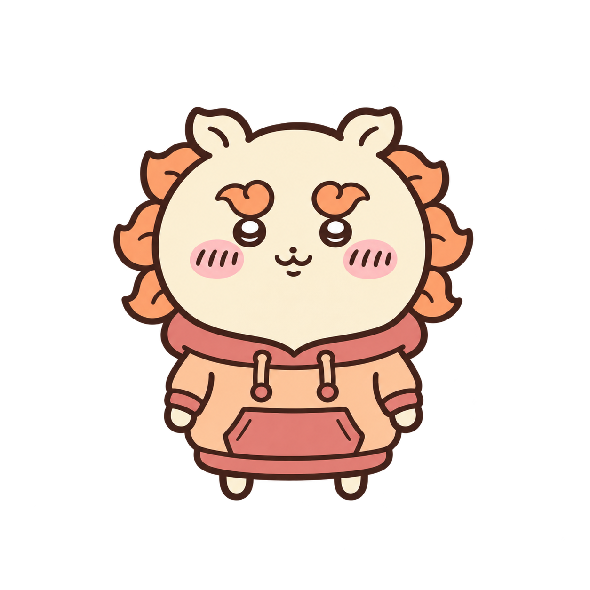
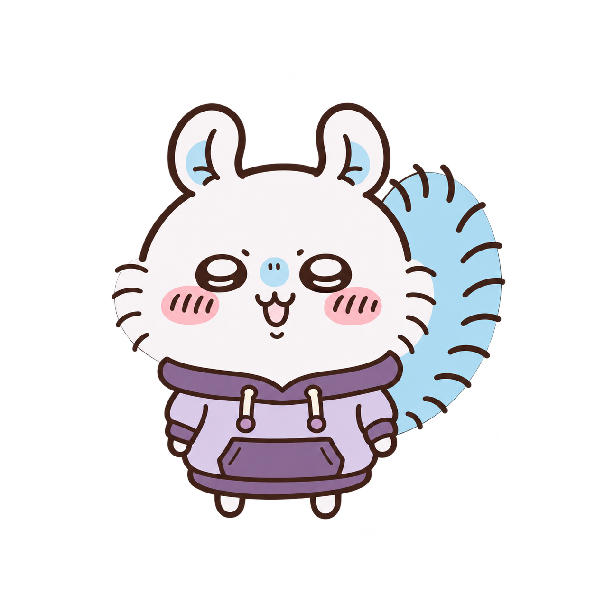
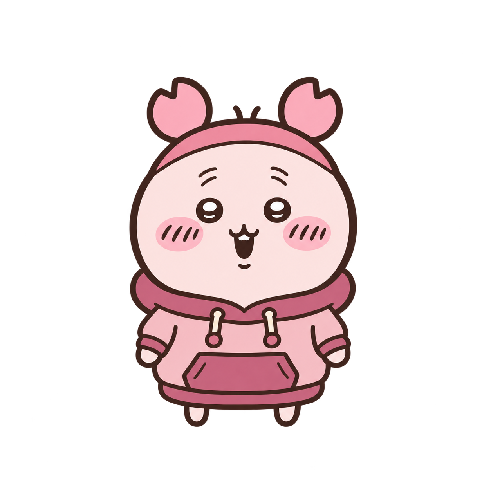
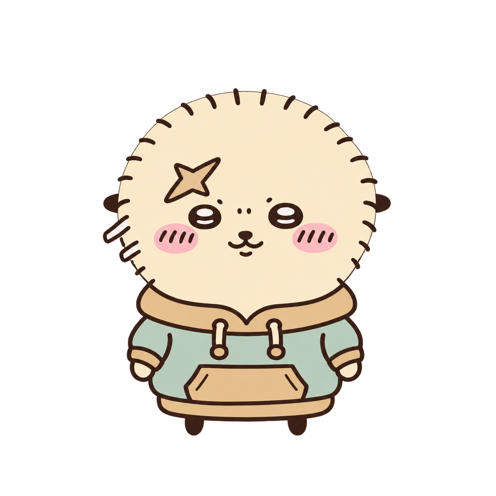

THE LITTLE HOODIE COLLECTION
후드를 입은 여덟 친구.
캐릭터와 어울리는 색으로 준비한 후드 팬 편집 컬렉션입니다.
기본 캐릭터는 공식 공개 원본이며, 아래 후드 모습은 원본을 참고해 AI로 제작한 비공식 편집 이미지입니다.

치이카와
크림 × 딸기우유부드러운 크림 몸판에 연분홍 포인트

하치와레
하늘색 × 남색맑은 하늘색 몸판과 단정한 남색 안감

우사기
버터 × 당근 주황밝은 버터색과 활기찬 주황색 주머니

쿠리만쥬
오트밀 × 코코아차분한 오트밀 몸판과 따뜻한 코코아색

시사
살구 × 산호포근한 살구색과 생기 있는 산호색

모몽가
라벤더 × 짙은 보라은은한 라벤더에 짙은 보라 포인트

후루혼야
연분홍 × 체리연분홍 몸판과 짙은 체리색 배색

라코
세이지 × 샌드차분한 세이지 몸판과 샌드색 포인트